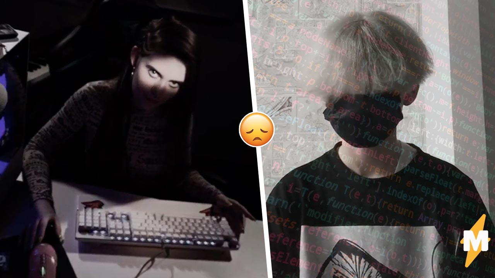
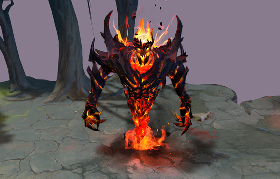

Другие вопросы
1000-7
После того как буквенное сочетание zxc разошлось по Сети, геймеры принялись возмущаться, называя позёрами не играющих в Dota пользователей интернета. Для того чтобы вычислить настоящего zxc, они просили по памяти пропеть слова песни juggernaut исполнителя Shadowraze.
Самый важный ронин в этой мёртвой гуль-тусовке. Глаза — шаринган Итачи, самый главный в потасовке.
Настоящие zxc считают трек своим гимном и знают наизусть.
Десятилетние zxc, назовите хоть одно слово из этой песни, кроме «шаринган» и «Итачи», — пишет тиктокер strxzeex.

img src="zxc3.jpg" border=1 hspace=15 width="400" align=left>
